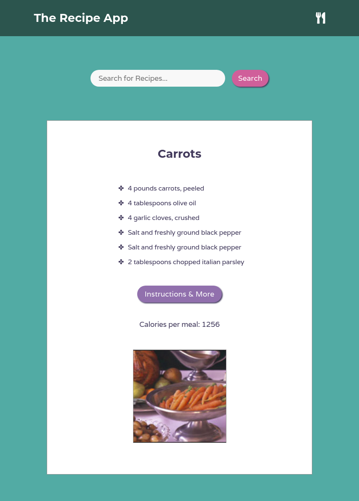

The Recipe App
Created with React, the Recipe app queries the Edamam API for recipes
and outputs 10 recipes, their ingredients, and a link to the external
website with the instructions based on the user's input.
Technologies:
- - React
- - HTML
- - CSS
GitHub Project Repository and Website:
App Preview:
